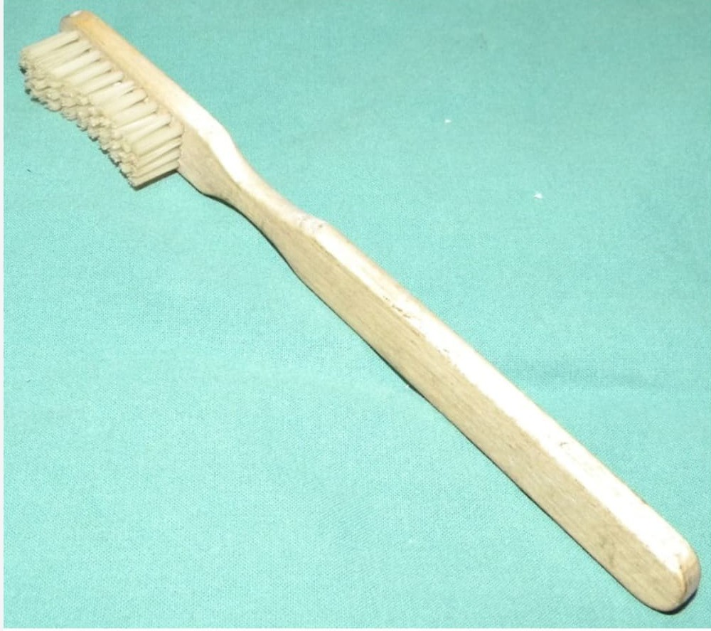
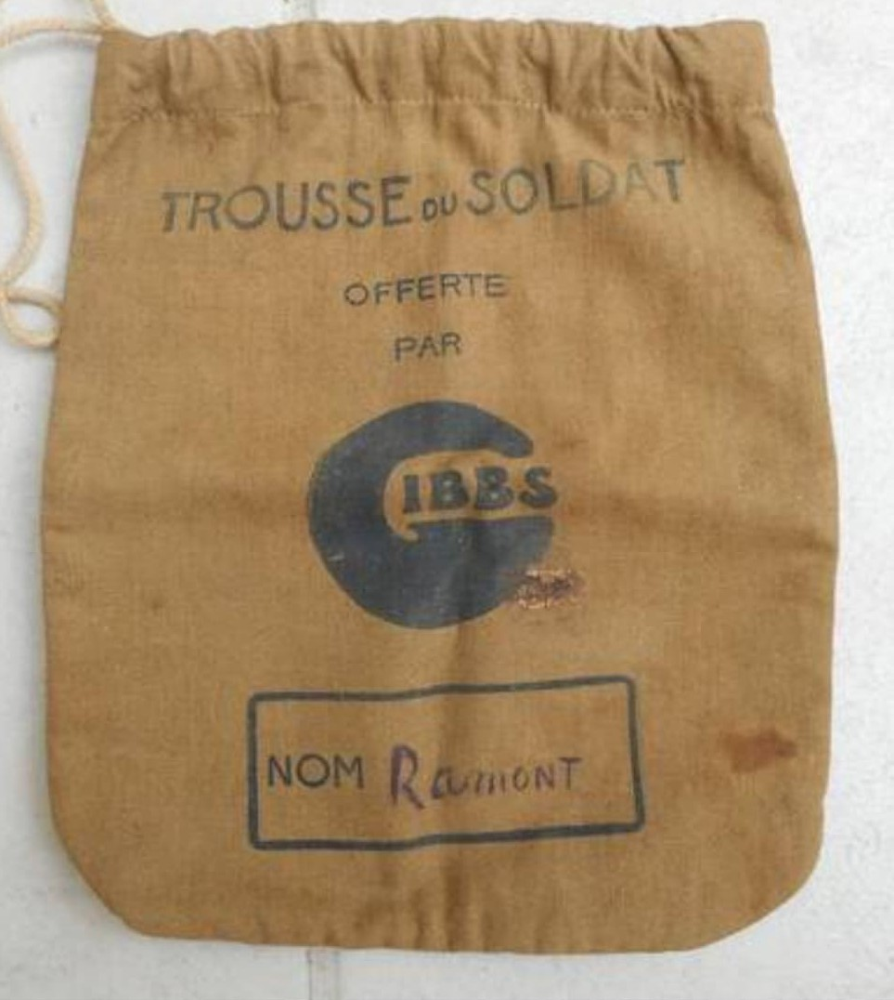

Introduction
Malgré les conditions difficiles de la campagne de 1939–1940, le soldat français conserve un nécessaire de toilette minimal pour rester propre, se raser et entretenir son apparence. Ces objets, souvent d’origine civile, sont rangés dans une petite trousse et complètent l’équipement personnel du combattant. Ils témoignent du quotidien, des habitudes et de l’importance de l’hygiène même en période de guerre.
Savon militaire

Petit savon civil ou militaire utilisé pour la toilette quotidienne, souvent fourni dans les colis familiaux.
Rasoir métallique

Rasoir simple, souvent de fabrication civile, indispensable pour rester présentable malgré les conditions de campagne.
Peigne en bakélite

Peigne léger en bakélite ou en bois, utilisé pour l’entretien des cheveux et de la barbe.
Brosse à dents

Objet d’hygiène personnel, souvent civil, parfois accompagné d’un petit tube de dentifrice.
Miroir de poche

Petit miroir utilisé pour se raser, vérifier une blessure ou se nettoyer correctement.
Trousse de toilette

Pochette en tissu ou cuir contenant les objets d’hygiène essentiels du soldat.
Chiffon de toilette

Petit linge utilisé pour se laver le visage, les mains ou sécher le matériel.